LE Audio Control example
Overview
This sample application sets up the EM9305 device to act as an server device that will allow the Central to discover the services and connect to the TMAP (Telephony and Media Audio Profile), CCP (Call Control Profile), MCP (Media Control Profile) profiles.
It exposes the following profiles and services:
Generic Access
Generic Attribute
Device Information
Microphone Control
Volume Control
Audio Stream Control Service
Published Audio Capabilities Service
Coordinated Set Identification Service
TMAS Service (Call Control Profile discovered through this)
Build
The build target of this example is: nvm_emb_audio_control
cd <sdk>\build
cmake --build . --target nvm_emb_audio_control
To test the example with PTS (Profile Tuning Suite) the build target to be built is: nvm_emb_audio_control_pts_tester
cd <sdk>\build
cmake --build . --target nvm_emb_audio_control_pts_tester
Program
To program and run the example:
cd <sdk>\tools\blengine
python blengine_cli.py --port COMYY run emsystem_prog ..\..\build\projects\nvm_emb_audio_control\nvm_emb_audio_control.ihex --progress
OR
cd <sdk>\tools\blengine
python blengine_cli.py --port COMYY run emsystem_prog ..\..\build\projects\nvm_emb_audio_control\nvm_emb_audio_control_pts_tester.ihex --progress
With YY = the COM port number of your DVK (optional if you set it in the file <sdk>\tools\blengine\config.cfg), and
XX = the design iteration identifier.
Test
Currently the sample application can only be tested using Profile Tuning Suite (PTS) provided by the Bluetooth SIG.
The nvm_emb_audio_control_pts_tester sample application needs to have a change for using the PTS LE Dongle bluetooth address that the customer has in the application and then it needs to be built and flashed on the device.
The code to change the bluetooth address can be found in the my_app.c file. The code snippet to change the address of the PTS Dongle the user has is:
bdAddr_t gPTSDongleAddr = {0x77, 0xd0, 0xe8, 0xe8, 0x07, 0xC0};
The PTS LE Dongle address to be entered in the code is in Little Endian format.
Get the PTS software and the PTS Dongle Firmware Upgrade Software download from here and complete the installation: https://pts.bluetooth.com/download
Once the dongle firmware is upgraded the PTS software will be able to find it as the dongle opens a COM port on your PC.
Click on the button that the below screenshot red arrow points to. This will initiate the connection to the dongle.
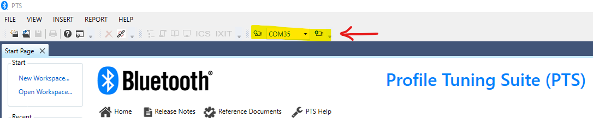Next Step is to either open an existing workspace or create new workspace.
Click on ‘New Workspace’ in the Start tab on the left. It will open a new window which will start the scan process to find the LE Devices around.
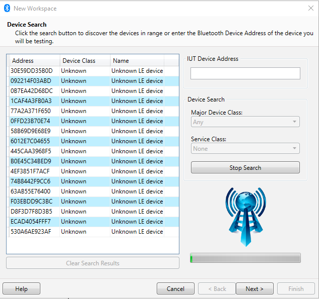The Major Device Class and Service Class can also be selected to narrow the search.
If the Device under Test (DUT) is found you can click on the device and click on ‘Next >’
If you do not see the DUT then you can also manually enter the address in the ‘IUT Device Address’ in the box.
Give a name to your project and also provide the location you want to store it at.
At this point you can also import any ICS file that you have (received from EM Microelectronic or downloaded from the BT Qualification site) which will enable all the test cases that can be run for this sample application. The alternate option is to click on ‘Next’ and then manually selecting all the profiles and test cases you want to select and run based on your application. An ICS file can be created using those. Example Screenshots below.
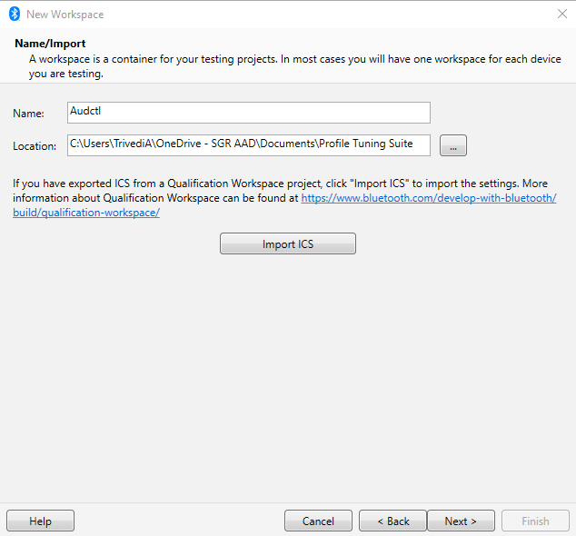 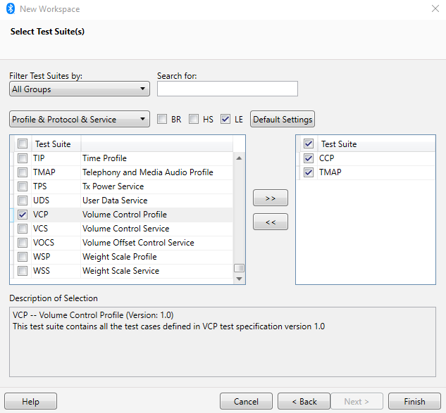{kind=link}
Once the project workspace is open (with imported ICS file), the test cases can be run which are not marked by Lock sign.
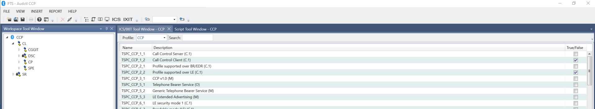To run the test case you can either simply double click on an individual test case or you can right click on top of the group names and click on ‘Run’. This will run all the tests under that group. (Run (Debug Logs) will provide debug logs for debugging the test case issue with DUT).
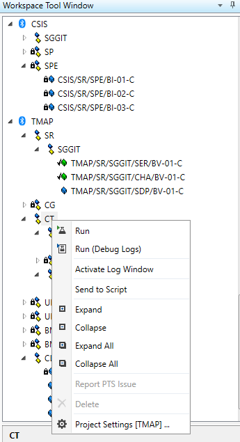Once the test starts running it will ask for some steps to be done which are either inputs to the DUT or requires the DUT to connect to the PTS dongle.
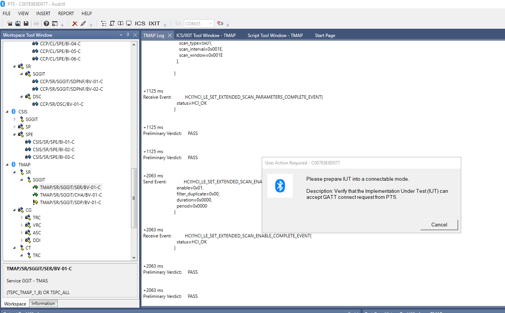Once the test runs it will end with ‘Pass’, ‘Fail’ or ‘Inconc’ (Inconclusive) verdict. Logs can be seen under the Log window in the PTS software.
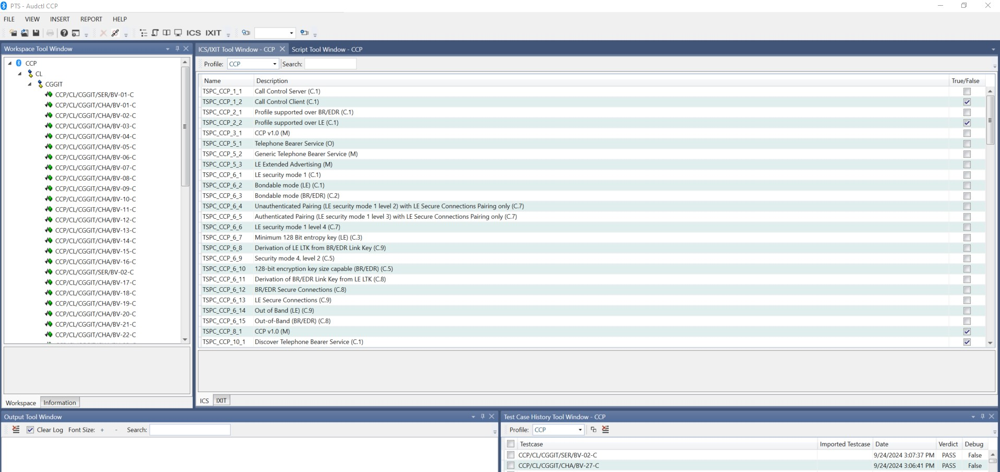For CCP Testing, there is a Command Line Interface that is provided using UART. The UART TX pin is set to GPIO 1 and UART RX pin is set to GPIO 2. A FTDI cable can be used to connect to the 9305 DVK on the GPIO header along with Ground and a Windows application like Putty can be used to input the data. On Putty the FTDI cables COM port needs to be identified and the 115200 baud rate should be used for communication.
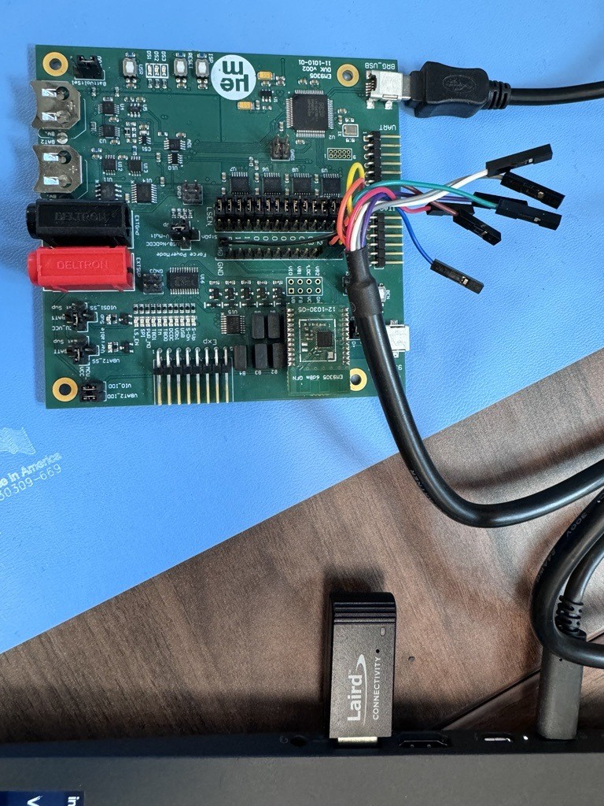Once UART and Putty are setup and PTS test is run, the test will ask for DUT to initiate the connection to the dongle. Click on the reset button on the DVK. This will initiate the connection to the dongle from the DUT and will run through the service and characteristics discovery process.
Note
This step requires the bluetooth address code change from the steps above.
Once the test goes through all the discoveries and requires an input, it will wait with a pop-up window like in the image below:
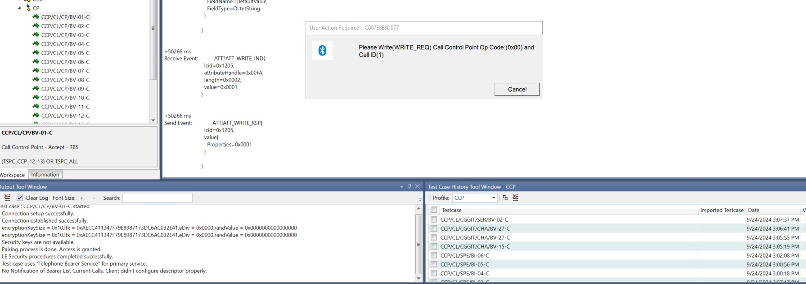At this point, the CLI can be used to enter an input character to select the CCP test by pressing ‘C’. The Menu for all the commands is below which can be accessed by pressing ‘M’ after selecting the CCP Test by pressing ‘C’:
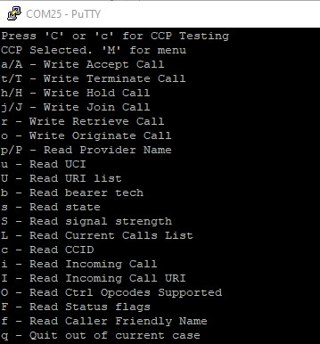Enter 2nd character to select the Write or Read operation from the menu as required by the test. The test will wait to enter the 3rd character (0 or 1) to enter the correct service ID based on if GTBS (Generic Telephony Bearer Service id 0) or TBS (Telephony Bearer Service id 1) CCP tests are run. Once the required characters are input the test will pass as shown in the screenshot below:
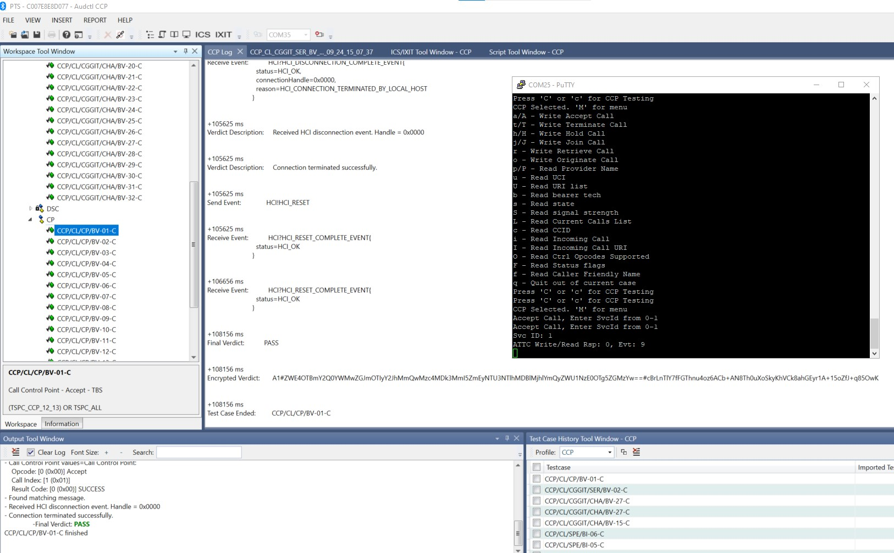All the other tests can be run similarly in the PTS based on the above steps.